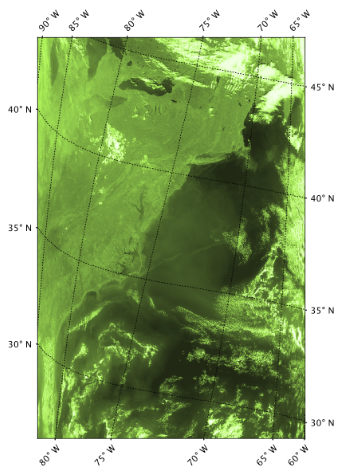
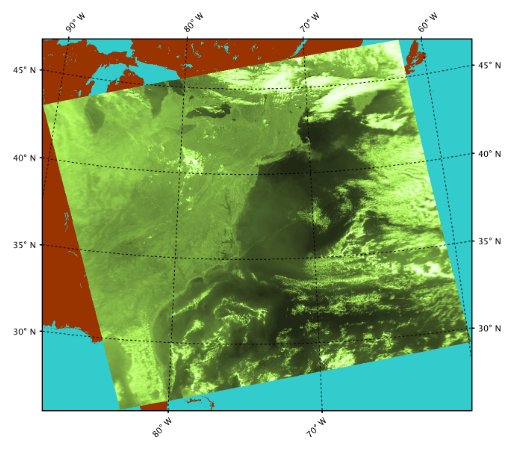

| Reprojection |
|
The Reprojection tool enables you to take any file (one which contains geo-coding) and resample it into a new file of a specified map projection. Some key parameters which you can specify are: coordinate reference system (CRS), resolution, masking, interpolation method, and geographic location.
The Reproject tool can be accessed in the menu system (Raster -> Geometric -> Reprojection) and at the gpf command line.
Figures 1a and 1b illustrate the results of applying the Reproject tool to a level-2 file using an oblique stereographic projection. Figure 1a is the original unmapped level-2 image (of a rhos_s band) and figure 1b is the reprojected image. Note: since all pixels in the reprojected file contain geocoding, the LandMask tool was subsequently used on the reprojected file to add Land (in brown) and water (in aqua) masks which span beyond the actual level-2 scene boundaries.
|

Figure 1a. Unmapped scene of a level-2 file |

Figure 1b. Projected scene of a level-2 file (Oblique Sterographic) |
Name
This is the file to be reprojected and serves as the input file to the Reprojection Tool. You
may conveniently select one of the files currently loaded in SeaDAS using the drop down selector. In this case, a file
reference index appears to the left of the file name indicating that it is a loaded file and not a direct system
file. To select a file directly from your computer system, use the selector button to the right and navigate to the
desired file. A file selected this way directly from your system will not have a file reference number displayed next to it.
Note: a loaded file can differ from a system file (even though they may bear the same name) in that you may have
made changes to the loaded file in SeaDAS and not saved them.
Name
This is the name of the reprojected file which will be generated. The default behavior appends
"_reprojected" to the original filename.
Save file as
Used to specify whether the file should be physically saved to the file system. The
combo box presents a list of file formats, currently BEAM-DIMAP, GeoTIFF, and HDF5.
Note: if deselected this tool will run much faster as the reprojection
does not actually occur at the time of run. Subsequently when the user opens a band in the reprojected file the
reprojection occurs for that band only.
Directory
Location in which to save the reprojected file.
Note: the default is the last directory saved to by any standard GUI tool in SeaDAS
Open in SNAP (SeaDAS)
Used to specify whether the file should be automatically opened in SNAP (SeaDAS).
There are 3 options for selecting a CRS: create one yourself - "Custom CRS"; select one - "Predefined CRS"; or use one from an existing file - "Use CRS of file".
Custom CRS
With this option you will manually select the map projection (along with it's parameters) and the datum to use.
Geodetic datum
The coordinate system for locating positions on the Earth. In general, these are based on reference ellipsoids used
to represent the shape of the Earth. You can select from a variety of datums. The most common (and default)
is "WGS 84" (WGS 1984, EPSG:4326).
Projection
The map projection (or how the 3 dimensional Earth's surface will be transformed onto a 2 dimensional surface).
Select from a list of map projections. If a projection requires parameters then the "Projection Parameters" button will
become selectable.
Projection Parameters
This opens a window of selectable parameters needed by the selected map projection. These contain default values,
but likely
you will want to modify these values based on your scene location or region of interest.
(See CRS Parameters for a more on these
parameters)
Predefined CRS
SeaDAS contains a multitude of pre-defined coordinate reference systems including the EPSG (European Petroleum
Survey Group) Geodetic Parameter
Dataset. Use the selector to the right to choose one
of these projections. (
See Predefined CRS for more on this).
Use CRS of file
Select a file from your system (one with geo-coding) and use the identical map projection criteria and geographic
boundaries of that file. This will have the effect that both files are collocated (same raster grid size and grid
geocoding) but separate files. See the Collocation Tool if you wish to actually merge the files together.
Masking
Expression
You can create a custom logical expression to constrain which pixels of the source band get used.
Edit Expression
This accesses the Expression Editor to help you construct a logical expression. Note that the mask expression
you create here is applied to all of the bands so avoid band specific expressions.
Apply source valid pixel expression
Each band of the source file has a valid pixel expression which designates whether a pixel is valid for display
or some other operation. These expressions are unique to each band. When reprojecting a source file you want to
consider whether or not to allow the "invalid" pixels to be used or ignored.
When this is selected only the pixels which are "valid" based on the valid pixel expression contraints,
will be used in the creation of the reproject file.
Output Settings
Preserve resolution
Use the SeaDAS defaults which will automatically determine a "best-fit" resolution, output file size, and easting
and westing. You can deselect this and manually set these parameters by clicking "Output Parameters".
(see details)
Resampling method
This is the interpolation method. Choose between Nearest, Bilinear, and Bicubic. (See details)
No-data value
The default no-data value is used for output pixels in the projected band which have either no corresponding pixel
in the source product or the source pixel is invalid.
Retain valid pixel expression
The valid pixel expression of each of the source file bands will be retained and stored in the corresponding
bands of the reprojected file.
Reproject tie-point grids
Specifies whether or not the tie-point grids shall be included. If they are reprojected they will appear as bands in
the target product and not any more as tie-point grids.
Add delta lat/lon bands
Specifies whether or not delta latitude and longitude bands will be added to the target product. These are virtual
bands, which can be used to assess the accuracy of the new geo-coding given by the Coordinate Reference System (CRS)
with respect to the old geo-coding.
Scene width
This will be the width in pixels of the output file.
Scene height
This will be the height in pixels of the output file.
Center longitude
This is the longitude of the center of the source file.
Center latitude
This is the latitude of the center of the source file.
CRS
This is name of the chosen projection and datum
Show WKT
This is the CRS WKT (well-known text)
This is a sub window of options launched from the Custom CRS Projection Parameters button
Semi-Major
The semi-major axis of the planet's shape treated as an ellipsoid, which in the case of the Earth, is the equatorial
radius.
This value is automatically filled based on the datum (reference ellipsoid) which you selected.
Semi-Minor
The semi-minor axis of the planet's shape treated as an ellipsoid, which in the case of the Earth, is the polar
radius.
This value is automatically filled based on the datum (reference ellipsoid) which you selected.
False Easting
This is the distance away from the origin (x component) to place the reference pixel. This essentially has the
effect of
shifting the geographic boundaries of your output file sideways.
False Northing
This is the distance away from the origin (y component) to place the reference pixel. This essentially has the
effect of
shifting the geographic boundaries of your output file up and down.
Map Projection dependent fields
Each map projection may have additional fields dependent on the particular projection. Some of these parameters are:
Latitude of center
Longitude of center
Central meridian
Latitude of origin
Scale factor
Azimuth
Standard parallel 1
...
This is a sub window of options launched from the Map Projection & Settings window
Select a CRS in the left window of this GUI and an XML text representation of the selected projection will be displayed and loaded in the right side of this GUI . If you look at the XML, you can see all the individual parameters which go into the particular projection. You could replicate or deviate from these parameters if you wish by instead using the "Custom CRS" option of the parent window and manually setting these parameters.
Note 1: as of SeaDAS 7.5, the EPSG dataset being used is version 7.9.0
Note 2: you can use this XML or the authority code when running Reproject in the command line mode.
This is a sub window of options launched from the Resolution Output Parameters button.
Reference Pixel
This is the pixel of your output file to use for setting the easting and northing.
Reference pixel is at scene upper left
In this case the upper left pixel of the output file will be used as the reference.
Reference pixel is at scene center
In this case the center pixel of the output file will be used as the reference.
Other reference pixel position
In this case you custom specify which pixel of the output file will be used as the reference.
Easting
This is the distance away from the origin (x component) to place the reference pixel. This essentially has the
effect of
shifting the geographic boundaries of your output file sideways.
Northing
This is the distance away from the origin (y component) to place the reference pixel. This essentially has the
effect of
shifting the geographic boundaries of your output file up and down.
Orientation
This is the angular rotation of the output image. It is the angle between geographic north and map grid north (in degrees),
in other words, the convergence angle of the projection's vertical axis from true north.
Pixel sizeX
This is the resolution in the x direction of the output image. The units are dependent on which CRS you have
defined.
Pixel sizeY
This is the resolution in the y direction of the output image. The units are dependent on which CRS you have
defined.
Fit product size
This is used to define the width and height in pixels of the output file such that all data from the input file
will be "best fit" and fully included in the output file.
Of note and caution is that SeaDAS (as of version 7.5) uses the width and height setting and ignores this checkbox
when Reproject runs.
Really the wording on this should be "Edit sizing". We will have to look into this. Regardless, clicking "Reset"
will set
these values for the width and height to "best fit".
Width
This is the desired width in pixels of the output file.
Height
This is the desired height in pixels of the output file.
The following meta data is added to the output file by the Reproject tool. All the rest of the original meta data from the
input file is retained and included in the output file
| Name | Description |
|---|---|
Reproject_gpt_parameters |
The full GPT operator parameter xml string used in the creation the output file |
crs |
The coordinate reference system (WKT) used in the creation of the output file |
map_projection |
The map projection name used in the creation of the output file |
history |
"Reproject" is prepended to original history value |
spatial_resolution |
If exists in original file, "Derived from" is prepended to original value |
processing_level |
If exists in original file, "Derived from" is prepended to original value |
product_name |
If exists in original file, "Derived from" is prepended to original value |
title |
If exists in original file, "Derived from" is prepended to original value |